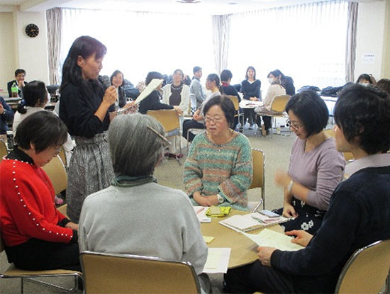

2019年度組合員活動交流会報告
楽しい会議のすすめ方などについて学び、活動交流しました
1．報告の趣旨
- （1）
- 埼玉県生協連では、くらしに関わる様々な社会的課題について、生協として関わることの必要性、重要性を提起し、会員生協の取り組みにつなげることのできる組合員・役職員を対象とした学習会をおこなっています。今回の組合員活動交流会では、活動をすすめるうえでのコミュニケーションスキルアップをはかること、具体的には、組合員活動にかかわる「楽しい会議のすすめ方」と「共通認識の作り方」「合意形成のプロセス」について、ワークショップ形式で学びました。
- （2）
- 日時：2019年12月12日（木）10時30分～14時30分
- 会場：市民会館うらわ会議室705・706
- 講師：NPO法人ハンズオン！埼玉 西川 正さん
- 参加：4生協54人
2．報告の内容
- (1) いくつかのアイスブレイクを実践しながら6人ごとの8つのグループに分かれました。
- (2) 段ボール円卓をかこんで、「つまらない会議とは」などのテーマについて、ラベルに書きながら意見を交流しました。
- (3) 午後は日頃の活動を交流し、グループごとに発表し、共有しました。
3．参加者の感想

やってみようと思ったこと
アイスブレイクで声を出しやすい環境づくり
ファシリテーターでなくてもできる工夫（うなづく、質問を装った説明など）
会議の形態を変えてみることも検討してみたい
机の配置の仕方や会議をなごやかにスタートする工夫など
いろいろな人が声を出せるようにする工夫（あめを配るとか）
ホワイトボードなどに書きだすことは、たしかにわかりやすく、進行者VS参加者になりにくくていいと思う
日頃困っていること
世代間のコミュニケーション（考え方が年代によって違う）
組織の課題と組合員のやりたいことのギャップをどうするか
参加者にはなっても、活動に関わるまでには至らないという共通の課題があった